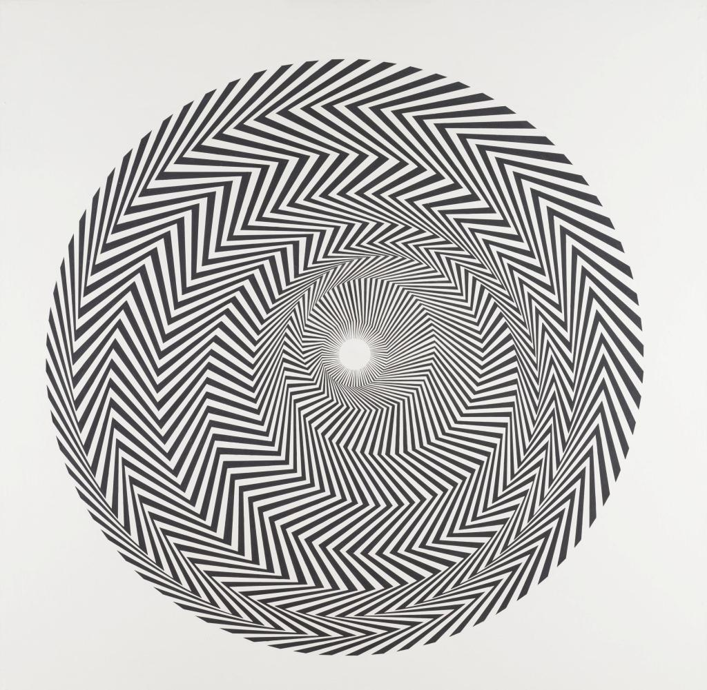

letter to a friend
kerouac & husserl
an interview presentation
a summary
bones in the soup
white free feet
another letter to a friend
forever runs through it
aspects of the one
death in heidegger
a forum is presupposed
ontological perspectivism
the worldly foolishness of ontology
third letter to a friend
vanity
poldy and joyce
kleiss on kleiss